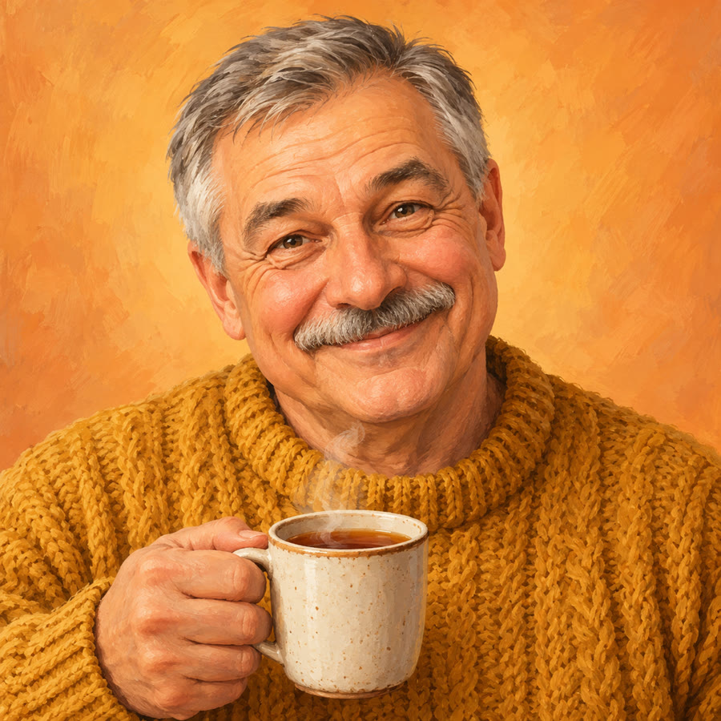
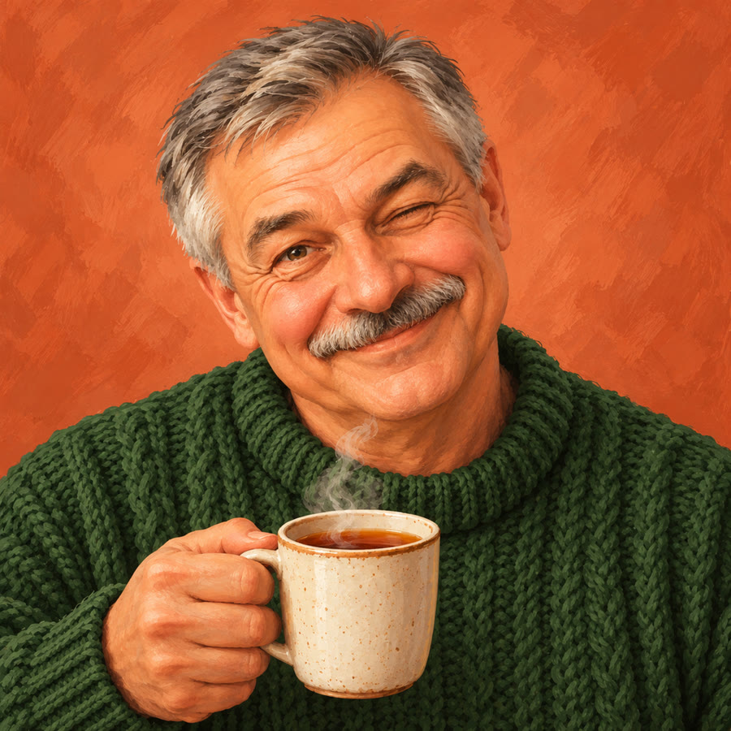
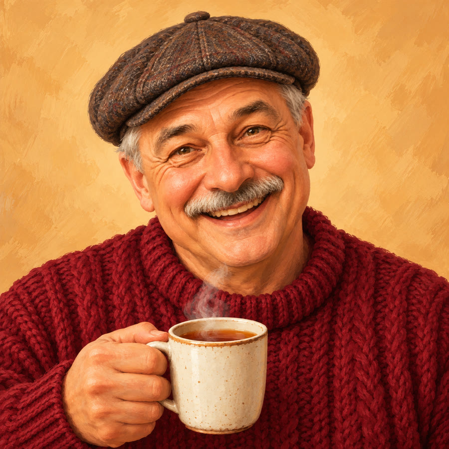

Семён Семёныч
Виртуальный администратор клуба «Круг Силы». Три варианта аватарки. Маленький кружок рядом с каждой картинкой показывает, как она будет выглядеть в списке чатов Телеграма.

Вариант 1советую
Горчичный свитер, смотрит прямо и улыбается. Лицо крупнее всего, в кружке читается лучше остальных.

Вариант 2
Тёмно-зелёный свитер, наклонил голову и подмигивает. Хитрее и озорнее.

Вариант 3
Свитер цвета бордо, кепка-восьмиклинка, смеётся. Самый народный.
Как поставить: в BotFather команда /setuserpic, выбрать бота и прислать картинку.